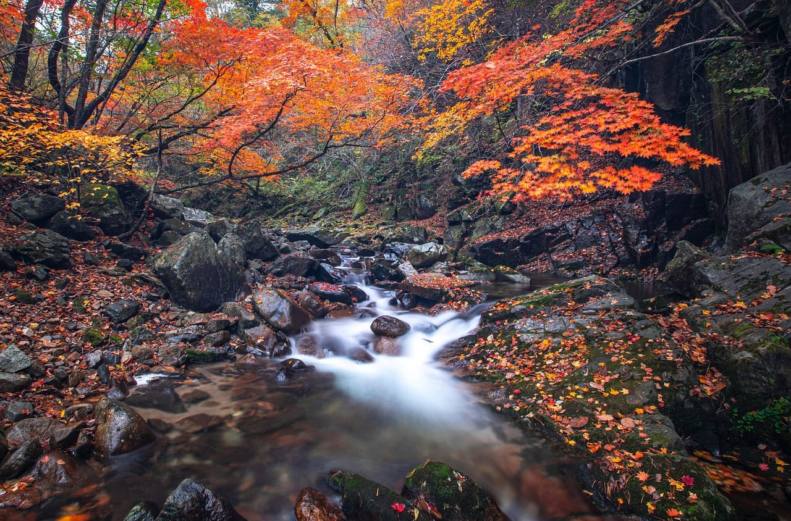
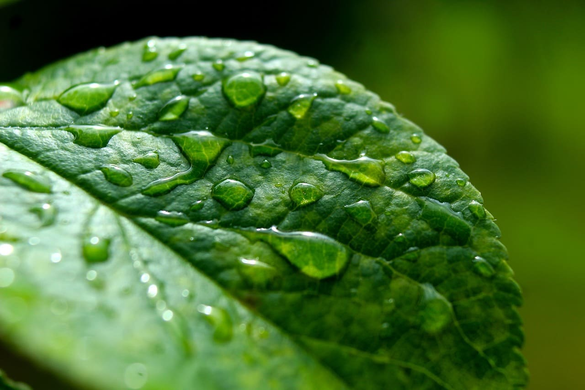
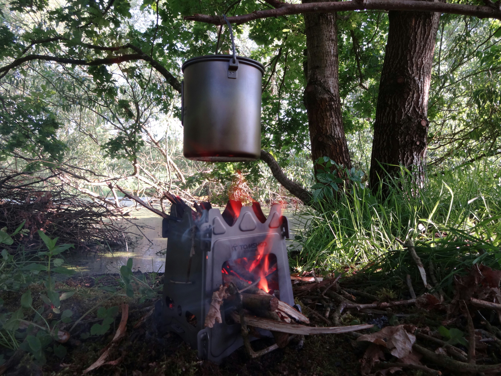

поиск воды на природе 
01Как найти воду?
- Река или ручей: Найдите ближайший реку или ручей для забора воды.
- Дождевая вода: Выкопайте ямку и накройте её большими листьями, чтобы собрать дождевую воду.
- Роса: Ранним утром проведите по траве тканью или бинтом, затем отожмите в сосуд. Можно также надеть ткань на ноги и пройтись — особенно эффективно на заросших участках.
- Конденсат из воздуха: Cолнечный дистиллятор
- Вода из снега или льда: Перед употреблением лучше прокипитить снег — поедание холодного снега снижает температуру тела. Лёд более плотный, даёт больше воды при меньшем объёме.

сбор воды с растений
02Как собрать воду?
- Мох: Мох обладает антисептическими свойствами и не содержит бактерий. Можно отжать мох, чтобы получить воду. Она будет коричневатого цвета из-за пигментации мха, но это безопасно.
- С дерева: При дожде обвяжите дерево тканью, чтобы собрать стекающую воду в сосуд.
- С куста: Обвяжите ветку куста или дерева полиэтиленовым пакетом. На его внутренней поверхности будет скапливаться испаряемая растениями вода.

очистка и дезинфекция
03Как очистить воду?
- Важно: Все собранные воды необходимо прокипятить для дезинфекции.
- Фильтрация: Если вода сильно загрязнена, её можно отфильтровать, создав фильтр с использованием доступных материалов.
- Солнечная дезинфекция: Наполните прозрачную пластиковую бутылку водой, оставьте некоторое количество воздуха, закройте и перемешайте, оставьте под прямыми солнечными лучами на 6 часов (или 48 часов в облачную погоду). УФ-лучи убивают большинство патогенов.
